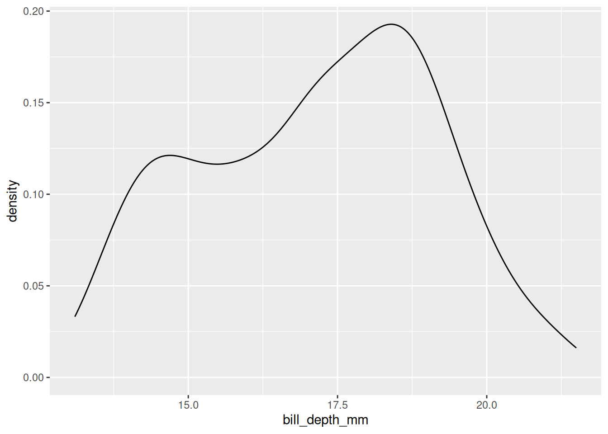
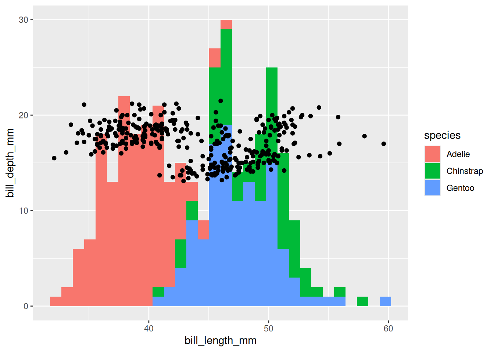
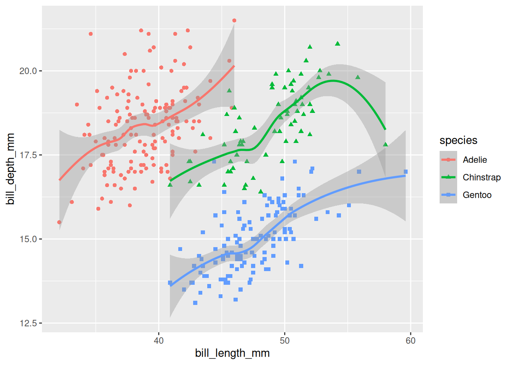
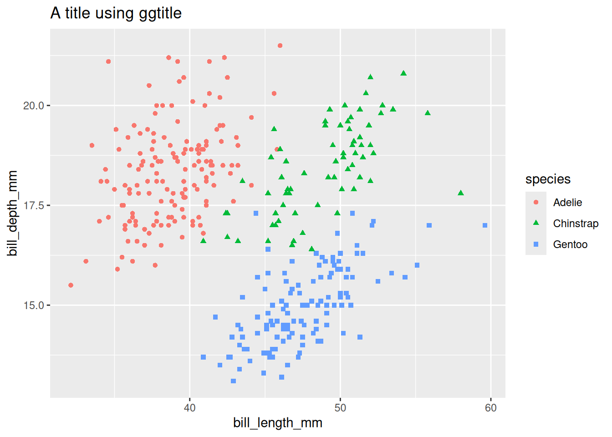

"hello world"[1] "hello world"
KIND learning network training materials by KIND learning network is licensed under CC BY-SA 4.0


demo(image) at the > prompt and press enter"hello world"[1] "hello world"
Ctrl + Enter to run your script"hello world"[1] "hello world"# variable
# assignment operator
hw <- "hello world"
hw[1] "hello world"# R is case sensitive
# R runs from top to bottom - you can't use an object until you've made it
try(HW) # a way of running broken code and capturing the error messages it provokesError in eval(expr, envir) : object 'HW' not foundHW <- "HELLO WORLD"
HW[1] "HELLO WORLD"# print function
# variables persist
print(hw)[1] "hello world"# help for all functions
?print# look at the help and try to make substr work to pull out "hello"
# arguments
substr(hw, 1, 5)[1] "hello"# return value
# assign out of functions
hi <- substr(hw, 1, 5)[1] "hello" "hello"# especially nice for maths stuff
# logic
c(4,3,7,55) * 2[1] 8 6 14 110c(4,3,7,55) > 10[1] FALSE FALSE FALSE TRUE# vectors
# homogenous - only one kind of thing per vector
typeof("this is a string")[1] "character"typeof(1L)[1] "integer"typeof(1)[1] "double"typeof(TRUE)[1] "logical"# factors - the odd one
# mainly a way of storing categorical data, especially when you need it in non-alphabetical order
factor(c("thing", "string", "wing", "bling")) # alphabetical[1] thing string wing bling
Levels: bling string thing winging_things <- factor(c("thing", "string", "wing", "bling"), levels = c("wing", "bling", "string", "thing")) # alphabetical
ing_things[1] thing string wing bling
Levels: wing bling string thinging_things[2][1] string
Levels: wing bling string thing# the list = a vector of vectors
# ragged - can store different kinds of values together
list(hh, hi, hw, ing_things)[[1]]
[1] "hello" "hello"
[[2]]
[1] "hello"
[[3]]
[1] "hello world"
[[4]]
[1] thing string wing bling
Levels: wing bling string thing# names
named_list <- list("hw" = hh,
"hi" = hi,
"hw" = hw,
"silly_name" = ing_things)
named_list$hw
[1] "hello" "hello"
$hi
[1] "hello"
$hw
[1] "hello world"
$silly_name
[1] thing string wing bling
Levels: wing bling string thing# different indexing required for lists
class(named_list[4]) #gets you a smaller list[1] "list"# two easy ways of getting vectors out of lists
named_list$silly_name[1] thing string wing bling
Levels: wing bling string thingnamed_list[[4]][1] thing string wing bling
Levels: wing bling string thing# and you can flatten a list into a vector
unlist(named_list) hw1 hw2 hi hw silly_name1
"hello" "hello" "hello" "hello world" "4"
silly_name2 silly_name3 silly_name4
"3" "1" "2" Ctrl + ⏎)<-
1 + 3[1] 4numbers * 5 # they're vectorised[1] 15 30 25 20 154 / 3[1] 1.3333335 - numbers[1] 2 -1 0 1 28 ^ 0.5[1] 2.828427The range operator is an easy way of making integer sequences:
1:4[1] 1 2 3 45:2[1] 5 4 3 2There’s always a fancier way too:
seq(1,3,0.2) [1] 1.0 1.2 1.4 1.6 1.8 2.0 2.2 2.4 2.6 2.8 3.0Really important for lots of programming things
a <- 2
a == 2[1] TRUEa < 3[1] TRUEa >= 2[1] TRUEa != 2[1] FALSEnumbers > 3[1] FALSE TRUE TRUE TRUE FALSEnumbers[numbers > 3] # filtering with equalities/inequalities[1] 6 5 4Note that most of these functions are vectorised, but will require you to use c() if you want to supply your values directly (i.e. if you don’t want to make a variable containing your values first). sum() is a rare exception:
sum(1,5,10) # works okay[1] 16[1] 16mean(c(1,5,10)) # and is the general way you'll need to work if you're supplying values directly to the function[1] 5.333333sqrt(a) # square root[1] 1.414214sum(numbers)[1] 21cumsum(numbers)[1] 3 9 14 18 21sqrt(numbers) # square roots[1] 1.732051 2.449490 2.236068 2.000000 1.732051mean(numbers) [1] 4.2median(numbers)[1] 4min(numbers)[1] 3max(numbers)[1] 6For odd reasons, there’s no built-in function to find the statistical mode of some numbers. It can be done, but the code is ugly (and exactly the sort of thing we’d usually avoid in beginner’s sessions). Included here for interest only:
# mode
as.numeric(names(sort(-table(numbers)))[1])[1] 3There are also a few other fairly basic functions that you might find helpful:
sd(numbers) # standard deviation[1] 1.30384range(numbers) # min and max in one[1] 3 6summary(numbers) # good for rapid numeric summaries Min. 1st Qu. Median Mean 3rd Qu. Max.
3.0 3.0 4.0 4.2 5.0 6.0 table(numbers) # good for finding out what you've got in more complicated vectorsnumbers
3 4 5 6
2 1 1 1 There are three main ways of doing this. Traditionally, you’d bracket together several functions, and read from the inside out. Fastest to write, hardest to read and fix:
or you can make intervening variables. Messy, but good if you need to be extra careful:
or, probably the best way, pipe the code together. Ctrl + Shift + m will give you a pipe symbol:
Note that the pipe method doesn’t automatically save your output. You’ll need to assign with <- to do that:
tolower(hw)[1] "hello world"toupper(hw)[1] "HELLO WORLD"tolower(longer_string)[1] "this" "is" "a" "length" "seven" "character"
[7] "vector" toupper(longer_string)[1] "THIS" "IS" "A" "LENGTH" "SEVEN" "CHARACTER"
[7] "VECTOR" paste(hw, hw)[1] "hello world hello world"paste(string, "ed instrument")[1] "just a string ed instrument"paste0("question ", numbers)[1] "question 3" "question 6" "question 5" "question 4" "question 3"rep(hw, 10) [1] "hello world" "hello world" "hello world" "hello world" "hello world"
[6] "hello world" "hello world" "hello world" "hello world" "hello world"strsplit(hw, " ") # split a string into pieces and get a list back[[1]]
[1] "hello" "world"[1] "hello" "world"grep("seven", longer_string) # tell me where in a vector a search term is found[1] 5grepl("seven", longer_string) # tell me if a vector contains a search term[1] FALSE FALSE FALSE FALSE TRUE FALSE FALSEsort(longer_string) # into alphabetical order[1] "a" "character" "is" "length" "seven" "this"
[7] "vector" table(longer_string) # as with numberslonger_string
a character is length seven this vector
1 1 1 1 1 1 1 Don’t repeat your code. Long code is hard to read and understand. Three basic design patterns: the function, the loop, the if/else.
# basic function syntax
# need to run the definition before calling it
function_name <- function(argument){
# some code doing something to the argument
argument + 4 # the function will return the last value it produces
}
function_name(3)[1] 7# challenge - I'm bored of writing na.rm = TRUE. Could you make mean() automatically ignore the missing values?
new_mean <- function(x){
mean(x, na.rm = TRUE)
}
new_mean(c(1,4,2,4,NA))[1] 2.75# arguments and defaults
# simple function syntax without {}
multo <- function(n1, n2 = 7) n1 * n2
multo(3) [1] 21multo(3, 6) [1] 18# anonymous function syntax is useful, but way too evil for a beginner's course
(\(x) x^2)(5)[1] 25(\(x, y) x^y)(5,3)[1] 125# basic syntax
for(i in 1:5){
print(i)
}[1] 1
[1] 2
[1] 3
[1] 4
[1] 5# seq_along as a sensible safe way to work with vectors
for(i in seq_along(numbers)){ # seq_along converts a vector into sequential integers 1,2,3,4... up to the length of the vector
print(i)
}[1] 1
[1] 2
[1] 3
[1] 4
[1] 5# basic syntax
a <- 3
if(a == 3){
"a is three"
} else {
"nope"
}[1] "a is three"# even easier if your condition is logical
c <- TRUE
if(c){
"c is true"
} else {
"nope"
}[1] "c is true"# combine conditions
b <- 2
if(a == 3 | b == 3){
"a and/or b are three"
} else {
"nope"
}[1] "a and/or b are three"if(a == 3 & b == 3){
"a and/or b are three"
} else {
"nope"
}[1] "nope"d <- c(4,3)
if(d == 3){
"if/else isn't vectorised"
} else {
"so this won't work"
}We can bring in external code to help us with R. That external code is known as a package. There are thousands of packages in current use, as the relevant pages on CRAN will tell you.
We need to install packages before we can use them. That only needs to be done once for your R setup. To illustrate, let’s install a package, called palmerpenguins, which contains some interesting data:
install.packages("palmerpenguins")Once that package is installed, we can use the data (and functions) it contains by attaching them to our current script:
Once we’ve done that, we’ll have several new items available to use. The most important here is the main penguins dataset:
penguins# A tibble: 344 × 8
species island bill_length_mm bill_depth_mm flipper_length_mm body_mass_g
<fct> <fct> <dbl> <dbl> <int> <int>
1 Adelie Torgersen 39.1 18.7 181 3750
2 Adelie Torgersen 39.5 17.4 186 3800
3 Adelie Torgersen 40.3 18 195 3250
4 Adelie Torgersen NA NA NA NA
5 Adelie Torgersen 36.7 19.3 193 3450
6 Adelie Torgersen 39.3 20.6 190 3650
7 Adelie Torgersen 38.9 17.8 181 3625
8 Adelie Torgersen 39.2 19.6 195 4675
9 Adelie Torgersen 34.1 18.1 193 3475
10 Adelie Torgersen 42 20.2 190 4250
# ℹ 334 more rows
# ℹ 2 more variables: sex <fct>, year <int>That’s tabular data - so formed into rows and columns, rectangular (so all columns the same lengths etc), and with each column containing only one type of data. Tabular data is probably the most widely used type of data in R. That means that there are lots of tools for working with it. Some basic examples:
nrow(penguins)[1] 344ncol(penguins)[1] 8head(penguins)# A tibble: 6 × 8
species island bill_length_mm bill_depth_mm flipper_length_mm body_mass_g
<fct> <fct> <dbl> <dbl> <int> <int>
1 Adelie Torgersen 39.1 18.7 181 3750
2 Adelie Torgersen 39.5 17.4 186 3800
3 Adelie Torgersen 40.3 18 195 3250
4 Adelie Torgersen NA NA NA NA
5 Adelie Torgersen 36.7 19.3 193 3450
6 Adelie Torgersen 39.3 20.6 190 3650
# ℹ 2 more variables: sex <fct>, year <int>names(penguins)[1] "species" "island" "bill_length_mm"
[4] "bill_depth_mm" "flipper_length_mm" "body_mass_g"
[7] "sex" "year" As well as those base-R functions, there are also many packages for working with tabular data. Probably the best-known package is dplyr, which we install and attach in the same way as palmerpenguins:
install.packages("dplyr")The reason that dplyr is so popular is that some of the base-R ways of working with tabular data are a bit messy and hard to read:
penguins$species[1:4] # just to show the first few[1] Adelie Adelie Adelie Adelie
Levels: Adelie Chinstrap Gentoopenguins[["island"]][1:4] # just the first few, again[1] Torgersen Torgersen Torgersen Torgersen
Levels: Biscoe Dream Torgersendplyr generally produces much easier-to-read code, especially when using the pipe to bring together lines of code:
penguins |>
select(island) # pick out a column by providing a column name# A tibble: 344 × 1
island
<fct>
1 Torgersen
2 Torgersen
3 Torgersen
4 Torgersen
5 Torgersen
6 Torgersen
7 Torgersen
8 Torgersen
9 Torgersen
10 Torgersen
# ℹ 334 more rowspenguins |>
select(-island) # remove a column# A tibble: 344 × 7
species bill_length_mm bill_depth_mm flipper_length_mm body_mass_g sex
<fct> <dbl> <dbl> <int> <int> <fct>
1 Adelie 39.1 18.7 181 3750 male
2 Adelie 39.5 17.4 186 3800 female
3 Adelie 40.3 18 195 3250 female
4 Adelie NA NA NA NA <NA>
5 Adelie 36.7 19.3 193 3450 female
6 Adelie 39.3 20.6 190 3650 male
7 Adelie 38.9 17.8 181 3625 female
8 Adelie 39.2 19.6 195 4675 male
9 Adelie 34.1 18.1 193 3475 <NA>
10 Adelie 42 20.2 190 4250 <NA>
# ℹ 334 more rows
# ℹ 1 more variable: year <int>penguins |>
select(species, flipper_length_mm, island) # select and re-order columns# A tibble: 344 × 3
species flipper_length_mm island
<fct> <int> <fct>
1 Adelie 181 Torgersen
2 Adelie 186 Torgersen
3 Adelie 195 Torgersen
4 Adelie NA Torgersen
5 Adelie 193 Torgersen
6 Adelie 190 Torgersen
7 Adelie 181 Torgersen
8 Adelie 195 Torgersen
9 Adelie 193 Torgersen
10 Adelie 190 Torgersen
# ℹ 334 more rowspenguins |>
select(home_island = island) # select and rename# A tibble: 344 × 1
home_island
<fct>
1 Torgersen
2 Torgersen
3 Torgersen
4 Torgersen
5 Torgersen
6 Torgersen
7 Torgersen
8 Torgersen
9 Torgersen
10 Torgersen
# ℹ 334 more rowsA note here: the penguins object that we’re working with is technically called a tibble. dplyr is specifically adapted to work with tibbles, and many of the functions won’t work properly on other kinds of data structure. The main idea underlying dplyr is that the many functions it contains should all work consistently, and work well together. So once you’ve got the hang of select there’s not much new to say about filter, which picks rows based on their values:
penguins |>
filter(species == "Adelie") # find some rows about Adelie penguins# A tibble: 152 × 8
species island bill_length_mm bill_depth_mm flipper_length_mm body_mass_g
<fct> <fct> <dbl> <dbl> <int> <int>
1 Adelie Torgersen 39.1 18.7 181 3750
2 Adelie Torgersen 39.5 17.4 186 3800
3 Adelie Torgersen 40.3 18 195 3250
4 Adelie Torgersen NA NA NA NA
5 Adelie Torgersen 36.7 19.3 193 3450
6 Adelie Torgersen 39.3 20.6 190 3650
7 Adelie Torgersen 38.9 17.8 181 3625
8 Adelie Torgersen 39.2 19.6 195 4675
9 Adelie Torgersen 34.1 18.1 193 3475
10 Adelie Torgersen 42 20.2 190 4250
# ℹ 142 more rows
# ℹ 2 more variables: sex <fct>, year <int>penguins |>
filter(bill_length_mm > 55) # find the big bills# A tibble: 5 × 8
species island bill_length_mm bill_depth_mm flipper_length_mm body_mass_g
<fct> <fct> <dbl> <dbl> <int> <int>
1 Gentoo Biscoe 59.6 17 230 6050
2 Gentoo Biscoe 55.9 17 228 5600
3 Gentoo Biscoe 55.1 16 230 5850
4 Chinstrap Dream 58 17.8 181 3700
5 Chinstrap Dream 55.8 19.8 207 4000
# ℹ 2 more variables: sex <fct>, year <int># A tibble: 2 × 8
species island bill_length_mm bill_depth_mm flipper_length_mm body_mass_g
<fct> <fct> <dbl> <dbl> <int> <int>
1 Adelie Torgersen NA NA NA NA
2 Gentoo Biscoe NA NA NA NA
# ℹ 2 more variables: sex <fct>, year <int>And mutate - which makes new columns - will work in the same way:
penguins |>
mutate(new_col = 11) |> # every row the same
select(species, new_col) # so that we can see the new values in the preview# A tibble: 344 × 2
species new_col
<fct> <dbl>
1 Adelie 11
2 Adelie 11
3 Adelie 11
4 Adelie 11
5 Adelie 11
6 Adelie 11
7 Adelie 11
8 Adelie 11
9 Adelie 11
10 Adelie 11
# ℹ 334 more rowspenguins |>
mutate(bill_vol = bill_length_mm * bill_depth_mm^2) |> # some calculation
select(species, bill_vol)# A tibble: 344 × 2
species bill_vol
<fct> <dbl>
1 Adelie 13673.
2 Adelie 11959.
3 Adelie 13057.
4 Adelie NA
5 Adelie 13670.
6 Adelie 16677.
7 Adelie 12325.
8 Adelie 15059.
9 Adelie 11172.
10 Adelie 17138.
# ℹ 334 more rowspenguins |>
mutate(label = paste("From", island, "island, a penguin of the species", species)) |>
select(label, body_mass_g) # mutate and then select. You can use your new columns immediately.# A tibble: 344 × 2
label body_mass_g
<chr> <int>
1 From Torgersen island, a penguin of the species Adelie 3750
2 From Torgersen island, a penguin of the species Adelie 3800
3 From Torgersen island, a penguin of the species Adelie 3250
4 From Torgersen island, a penguin of the species Adelie NA
5 From Torgersen island, a penguin of the species Adelie 3450
6 From Torgersen island, a penguin of the species Adelie 3650
7 From Torgersen island, a penguin of the species Adelie 3625
8 From Torgersen island, a penguin of the species Adelie 4675
9 From Torgersen island, a penguin of the species Adelie 3475
10 From Torgersen island, a penguin of the species Adelie 4250
# ℹ 334 more rowsAs before, we need to assign with <- to save our changes. Let’s add the bill_vol column to the data now
penguins_vol <- penguins |>
mutate(bill_vol = bill_length_mm * bill_depth_mm^2)arrange sorts columns:
penguins_vol |>
arrange(bill_vol)# A tibble: 344 × 9
species island bill_length_mm bill_depth_mm flipper_length_mm body_mass_g
<fct> <fct> <dbl> <dbl> <int> <int>
1 Gentoo Biscoe 42.9 13.1 215 5000
2 Gentoo Biscoe 42 13.5 210 4150
3 Gentoo Biscoe 40.9 13.7 214 4650
4 Adelie Dream 32.1 15.5 188 3050
5 Gentoo Biscoe 43.3 13.4 209 4400
6 Gentoo Biscoe 44.9 13.3 213 5100
7 Gentoo Biscoe 42.6 13.7 213 4950
8 Gentoo Biscoe 42.7 13.7 208 3950
9 Gentoo Biscoe 46.1 13.2 211 4500
10 Gentoo Biscoe 44 13.6 208 4350
# ℹ 334 more rows
# ℹ 3 more variables: sex <fct>, year <int>, bill_vol <dbl>The nice thing about dplyr is that there are several other packages which work in similar ways. This package ecosystem gets called the tidyverse, and is extremely widely used to do data science work in R. A close relative of dplyr is the readr package, which reads in data to R and makes it into tibbles:
install.packages("readr")There are many options for making graphs with R. We’ll use the ggplot2 package, which is probably the best balance between power and ease for beginners. We’ll install and attach that package in the usual way:
In ggplot, plots are built up in layers. If you take your penguins data, and pipe it to the ggplot() function, you’ll create a plot, albeit not a very interesting one:
penguins |>
ggplot()
To make our plot more interesting, we can add layers. We’ll add a geom layer now to build a simple histogram. Geoms describe the type of plot we want to add in a layer. So geom_line() adds a line-graph layer, geom_point() an XY scatter layer, geom_col() a column graph etc etc. Inside that geom_histogram() function, we’ll use a new function: aes(). aes() describes hthe relationship between our data and our graph. If we want to produce a histogram of flipper length, for example, we’d put our geom_histogram() and our aes() together like this:
penguins |>
ggplot() +
geom_histogram(aes(x = flipper_length_mm)) # do a histogram of flipper length
You’ll also see a slight quirk here about ggplot, which is that we don’t use the |> pipe with ggplot code. ggplot is older than the pipe, so we need to join lines of code using +. Back to aes(): if we want to make a similar graph that produces a histogram for a different part of our data, we’ll need to change the aes(). So a histogram of bill depth would be:
penguins |>
ggplot() +
geom_histogram(aes(x = bill_depth_mm))
But if we wanted to change the type of graph we produced for that data, we could keep the aes() intact, but change the geom_:
penguins |>
ggplot() +
geom_density(aes(x = bill_depth_mm))
Geoms have lots of options. Set fixed options for that geom outside the aes():
#
penguins |>
ggplot() +
geom_density(aes(x = bill_depth_mm), fill = "hotpink", alpha = 0.5)
R recognises about 600 colour names. There are various cheatsheets on the internet that will help with that. Or you can specify colour more precisely using hex colour values:
penguins |>
ggplot() +
geom_density(aes(x = bill_depth_mm), fill = "#4dc3ff", alpha = 0.5)Different geoms have different options, and can take different aes options to map features of your graph onto your data:
penguins |>
ggplot() +
geom_histogram(aes(x = bill_length_mm, fill = species)) # different colours per species
penguins |>
ggplot() +
geom_point(aes(x = bill_length_mm,
y = bill_depth_mm,
colour = species,
shape = species,
size = body_mass_g))
You can also put several geom_ layers on one plot. Those layers can have different aes:
penguins |>
ggplot() +
geom_histogram(aes(x = bill_length_mm, fill = species)) +
geom_point(aes(x = bill_length_mm, y = bill_depth_mm))
(not sure that plot’s showing anything useful at all). Or you can put one call to aes inside ggplot(), and have all your geom_ layers inherit:
penguins |>
ggplot(aes(x = bill_length_mm,
y = bill_depth_mm,
colour = species)) +
geom_point() +
geom_smooth() # smoothed conditional mean with confidence intervalYou can save and recall ggplot objects like anything else in R:
peng_plot <- penguins |>
ggplot(aes(x = bill_length_mm, y = bill_depth_mm, colour = species, shape = species)) +
geom_point()peng_plot
ggplot objects are lists:
Interestingly, the plot object contains the full data used to build the plot:
peng_plot$data # your original data# A tibble: 344 × 8
species island bill_length_mm bill_depth_mm flipper_length_mm body_mass_g
<fct> <fct> <dbl> <dbl> <int> <int>
1 Adelie Torgersen 39.1 18.7 181 3750
2 Adelie Torgersen 39.5 17.4 186 3800
3 Adelie Torgersen 40.3 18 195 3250
4 Adelie Torgersen NA NA NA NA
5 Adelie Torgersen 36.7 19.3 193 3450
6 Adelie Torgersen 39.3 20.6 190 3650
7 Adelie Torgersen 38.9 17.8 181 3625
8 Adelie Torgersen 39.2 19.6 195 4675
9 Adelie Torgersen 34.1 18.1 193 3475
10 Adelie Torgersen 42 20.2 190 4250
# ℹ 334 more rows
# ℹ 2 more variables: sex <fct>, year <int>It’s possible, although highly non-advisible, to fiddle with the ggplot object by assigning into it:
peng_plot$labels$x <- "huley booley"
peng_plotpeng_plot$labels$x <- "bill_length_mm" # restoring orderThe reason this is interesting and useful is that you can take a saved ggplot, and add extra layers to it:
peng_plot +
geom_smooth() # add extra layers to the saved object
Styling happens in layers too. Start with labelling, where there are several different possible options:
peng_plot +
ggtitle("A title using ggtitle") # good if you're only adding a title
peng_plot +
xlab("Bill length (mm), set using xlab") # or if you just want to tweak the x-axis label
peng_plot +
labs(x = "Bill length (mm), set using labs")
peng_plot +
labs(title = "An uninformative title") # better if you're doing lots of labellingpeng_plot +
labs(title = "An uninformative title",
x = "Something about Bill Lengths",
subtitle = "This one here is a subtitle") 
You can also theme the entire plot:
Each element can be styled individually. That can become very involved, but some simple and useful examples:
peng_plot +
theme_classic(base_size = 18) # embiggen the text
peng_plot +
theme_classic() +
theme(legend.position = "none") # hide the legend
Customising the plot colours can be done in several ways. For very simple cases, it might be enough to specify a vector of colour names or hex values, which you can then use inside either scale_fill_manual or scale_colour_manual:
my_colours <- c("#e66101", "#b2abd2", "#5e3c99")
peng_plot +
scale_colour_manual(values = my_colours) # use scale_colour_manual for geoms that take a colour aesthetic
# if you're using a geom that takes a fill, use scale_fill_manual:
penguins |>
ggplot() +
geom_col(aes(x = species, y = bill_length_mm, fill = species)) +
scale_fill_manual(values = my_colours)Manually specifying colours is hard, particularly as you should be considering the likely impacts on accessibility that can result. A stronger general approach is to use colorbrewer to do the hard work for you:
peng_plot +
scale_colour_brewer(palette = "Dark2")
peng_plot +
scale_colour_brewer(palette = "Paired")You can also borrow entire themes from packages, such as ggthemes:
# install.packages("ggthemes")
library(ggthemes)
peng_plot +
theme_economist() +
scale_colour_economist()
A final thought: if your ggplot code is becoming very complicated, the usual first check is to see if you can re-work your data to make it easier to plot. A good example is transforming wide data to long-form to simplify aes calls:
# install.packages("tidyr")
# install.packages("tibble")
library(tidyr)
library(tibble)
long_cars <- mtcars |>
select(qsec,drat, disp, hp) |>
rownames_to_column() |>
pivot_longer(-rowname)
long_cars |>
ggplot() +
geom_histogram(aes(x = value, fill = name), bins = 5) long_cars |>
ggplot() +
geom_histogram(aes(x = value, fill = name), bins = 5) +
facet_wrap(~name, ncol = 1, scales = "free") # this can be split into small multiples
You’ll often need to rework code as you write it. You can think of this similar to the process of drafting, and then editing, and then proof-reading text. There’s lots to say about this subject, so we’ll stick to a few beginner tips here. But you might also like to look at the set of R community standards produced by the KIND network:
source()
source() allows you to split up long R scripts. If you put some code in a file called somescript.R, you can then include that code in another script by writing: source(somescript.R). It’s as if you’d pasted the code in, but without the bulk and confusion that can cause.
For example, you might go with something like:
So if you’re working with a set of data about GP practices named practices, you might create several derivative variables which would most sensibly be named:
practices_countpractices_count_groupedpractices_largest# all the code here has been full of comments. Write comments!Three packages to know about to help manage your code: formatR, styler, and lintr
You should work in projects. That’s easy to do in Posit Cloud as everything is a project. R projects help keep you organised, and prevent you having to do lots of messy and fallible work in setting working directories, supplying file paths, and wrestling with scripts when you move them.
R thinks about a working directory, which is where it is based at the time it’s running. You can use the getwd() and setwd() to find out, or change, your working directory. But those are better avoided. If you’re working in a project, the project root is your working directory.
Projects allow you to use relative paths with confidence - so "data/data.csv" describes a file named data.csv that lives in the data subdirectory of your project. Managing full paths is a nuisance in R, especially if you’re on Windows. R doesn’t like Windows file paths as they include back slashes \. For example:C:\my_drive\my_code\R_code\data\data.csv. If we want to use that path in R, you’ll need to tweak it to deal with the back slashes. You can either double them:C:\\my_drive\\my_code\\R_code\\data\\data.csv or replace them with forward slashes /: C:/my_drive/my_code/R_code/data/data.csv.
But definitely better to avoid full paths if at all possible. Projects make scripts portable by allowing you to ignore details specific to your computer that are hard-coded into paths etc etc. Sharing code is a key advantage of R, and you should make that as easy and fun as possible
Some error messages - mainly those from newer functions - are nice and informative, and can even suggest ways of resolving the problem:
try(1 + "two")Error in 1 + "two" : non-numeric argument to binary operatorError : 'nope.csv' does not exist in current working directory ('/home/runner/work/KIND-training/KIND-training/r_training').try(penguins |> ggplot() |> geom_density(aes(y = flipper_length_mm)))Error in geom_density(ggplot(penguins), aes(y = flipper_length_mm)) :
`mapping` must be created by `aes()`.
ℹ Did you use `%>%` or `|>` instead of `+`?[1] NaNOthers are unfortunately a bit more opaque:
#
try(na_numbers[10,]) # vectors are, I suppose, 1-dimensionalError in eval(expr, envir) : object 'na_numbers' not foundtry(Sum(3,4,5)) # remember the capitalsError in Sum(3, 4, 5) : could not find function "Sum"But the worst are the non-error errors - e.g. where the code won’t even run well enough to have an error. A nice example is when your console is showing an +, rather than a >, which means means that R is waiting for input, and usually means there’s a missing bracket somewhere.
Another one to watch out for: there are a couple of different filter functions. If a filter isn’t working well, it’s always worth specifying which filter you want with dplyr::filter (or much more rarely stats::filter),
There are a couple of different areas to think about here. Reading data to and from Excel is the most straightforward:
# install.packages("readxl")
library(readxl)
# install.packages("readr")
library(readr)
library(dplyr)
read_xlsx("data/my_dat.xlsx") # to read data in from Excel# A tibble: 5 × 2
name values
<chr> <dbl>
1 Elizabeth 8
2 Lorah 7
3 Eilish 10
4 Colin 6
5 Robert 1You can also scale this up to read several files at once:
list.files("data/multifile", full.names = T) |>
readr::read_csv()# A tibble: 20 × 3
name value1 value2
<chr> <dbl> <dbl>
1 Elizabeth 8 7
2 Lorah 7 5
3 Eilish 10 7
4 Colin 6 41
5 Robert 1 99
6 Elizabeth 8 7
7 Lorah 7 5
8 Eilish 10 7
9 Colin 6 4
10 Robert 1 99
11 Elizabeth 8 7
12 Lorah 7 5
13 Eilish 10 7
14 Colin 6 4
15 Robert 1 99
16 Elizabeth 8 7
17 Lorah 7 5
18 Eilish 10 7
19 Colin 6 4
20 Robert 1 99Or use a pattern option to only read some files:
list.files("data/",
full.names = T,
pattern = "my_",
recursive = T)[1] "data//multifile/my_dat - v1.csv" "data//multifile/my_dat - v2.csv"
[3] "data//multifile/my_dat - v3.csv" "data//multifile/my_dat - v4.csv"
[5] "data//my_dat.csv" "data//my_dat.xlsx"
[7] "data//my_output_dat.csv" Writing back to a proper .xlsx file is much more involved. A good place to start would be the openxlsx package, although note that this can become quite involved pretty easily. Excel files are surprisingly complicated…
Similarly, if you need to read/write Word documents, you’re going to need some packages. For Word, docxtractr (as the name suggests) is helpful for extracting data, while flextable can be used to help write to docx:
# install.packages("docxtractr")
# install.packages("flextable")
library(docxtractr)
library(flextable)
mtcars |>
flextable() |>
save_as_docx(path = "data/word.docx") # to write some dataWe can then read this data back to show how extraction might work:
mtcars_from_word <- docxtractr::read_docx("data/word.docx")But, unlike Excel, we need to do some additional work to extract our data. docxtractr has identified a table, so we can convert that back into a tibble to get at its contents:
mtcars_from_word |>
docxtractr::docx_extract_tbl() |>
knitr::kable()| mpg | cyl | disp | hp | drat | wt | qsec | vs | am | gear | carb |
|---|---|---|---|---|---|---|---|---|---|---|
| 21.0 | 6 | 160.0 | 110 | 3.90 | 2.620 | 16.46 | 0 | 1 | 4 | 4 |
| 21.0 | 6 | 160.0 | 110 | 3.90 | 2.875 | 17.02 | 0 | 1 | 4 | 4 |
| 22.8 | 4 | 108.0 | 93 | 3.85 | 2.320 | 18.61 | 1 | 1 | 4 | 1 |
| 21.4 | 6 | 258.0 | 110 | 3.08 | 3.215 | 19.44 | 1 | 0 | 3 | 1 |
| 18.7 | 8 | 360.0 | 175 | 3.15 | 3.440 | 17.02 | 0 | 0 | 3 | 2 |
| 18.1 | 6 | 225.0 | 105 | 2.76 | 3.460 | 20.22 | 1 | 0 | 3 | 1 |
| 14.3 | 8 | 360.0 | 245 | 3.21 | 3.570 | 15.84 | 0 | 0 | 3 | 4 |
| 24.4 | 4 | 146.7 | 62 | 3.69 | 3.190 | 20.00 | 1 | 0 | 4 | 2 |
| 22.8 | 4 | 140.8 | 95 | 3.92 | 3.150 | 22.90 | 1 | 0 | 4 | 2 |
| 19.2 | 6 | 167.6 | 123 | 3.92 | 3.440 | 18.30 | 1 | 0 | 4 | 4 |
| 17.8 | 6 | 167.6 | 123 | 3.92 | 3.440 | 18.90 | 1 | 0 | 4 | 4 |
| 16.4 | 8 | 275.8 | 180 | 3.07 | 4.070 | 17.40 | 0 | 0 | 3 | 3 |
| 17.3 | 8 | 275.8 | 180 | 3.07 | 3.730 | 17.60 | 0 | 0 | 3 | 3 |
| 15.2 | 8 | 275.8 | 180 | 3.07 | 3.780 | 18.00 | 0 | 0 | 3 | 3 |
| 10.4 | 8 | 472.0 | 205 | 2.93 | 5.250 | 17.98 | 0 | 0 | 3 | 4 |
| 10.4 | 8 | 460.0 | 215 | 3.00 | 5.424 | 17.82 | 0 | 0 | 3 | 4 |
| 14.7 | 8 | 440.0 | 230 | 3.23 | 5.345 | 17.42 | 0 | 0 | 3 | 4 |
| 32.4 | 4 | 78.7 | 66 | 4.08 | 2.200 | 19.47 | 1 | 1 | 4 | 1 |
| 30.4 | 4 | 75.7 | 52 | 4.93 | 1.615 | 18.52 | 1 | 1 | 4 | 2 |
| 33.9 | 4 | 71.1 | 65 | 4.22 | 1.835 | 19.90 | 1 | 1 | 4 | 1 |
| 21.5 | 4 | 120.1 | 97 | 3.70 | 2.465 | 20.01 | 1 | 0 | 3 | 1 |
| 15.5 | 8 | 318.0 | 150 | 2.76 | 3.520 | 16.87 | 0 | 0 | 3 | 2 |
| 15.2 | 8 | 304.0 | 150 | 3.15 | 3.435 | 17.30 | 0 | 0 | 3 | 2 |
| 13.3 | 8 | 350.0 | 245 | 3.73 | 3.840 | 15.41 | 0 | 0 | 3 | 4 |
| 19.2 | 8 | 400.0 | 175 | 3.08 | 3.845 | 17.05 | 0 | 0 | 3 | 2 |
| 27.3 | 4 | 79.0 | 66 | 4.08 | 1.935 | 18.90 | 1 | 1 | 4 | 1 |
| 26.0 | 4 | 120.3 | 91 | 4.43 | 2.140 | 16.70 | 0 | 1 | 5 | 2 |
| 30.4 | 4 | 95.1 | 113 | 3.77 | 1.513 | 16.90 | 1 | 1 | 5 | 2 |
| 15.8 | 8 | 351.0 | 264 | 4.22 | 3.170 | 14.50 | 0 | 1 | 5 | 4 |
| 19.7 | 6 | 145.0 | 175 | 3.62 | 2.770 | 15.50 | 0 | 1 | 5 | 6 |
| 15.0 | 8 | 301.0 | 335 | 3.54 | 3.570 | 14.60 | 0 | 1 | 5 | 8 |
| 21.4 | 4 | 121.0 | 109 | 4.11 | 2.780 | 18.60 | 1 | 1 | 4 | 2 |
Reading data from pdf is much more involved, and I’d suggest exploring the pdftools package as a starting point.
An alternative strategy if you need to write a lot of Word/pdf documents would be Rmarkdown or Quarto. These enable you to embed R code in a proper document production tool, which is great for writing regular reports.
There’s a really nice set of tools for text analysis in the tidytext package:
# install.packages("tidytext") # main tidytext package
library(tidytext)
#install.packages("stopwords") # to help remove common small words
library(stopwords)
# install.packages("janeaustenr") # for some sample text
library(janeaustenr)
austen_books() |>
unnest_tokens(input = text, output = word) |>
anti_join(get_stopwords()) |> # remove small common words
count(word, sort = T) |>
slice_max(n, n = 5)# A tibble: 5 × 2
word n
<chr> <int>
1 mr 3015
2 mrs 2446
3 must 2071
4 said 2041
5 much 1935